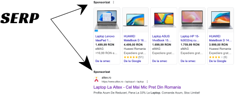

Construirea Brandului în SEO. Ce trebuie să știi despre SEO
Integrarea SEO și Brandingului: SEO-ul și construirea brandului sunt strâns interconectate în creșterea unei afaceri online. Recunoașterea brandului este esențială pentru SEO, iar SEO-ul contribuie la creșterea recunoașterii brandului.
Integrarea SEO și Brandingului: SEO-ul și construirea brandului sunt strâns interconectate în creșterea unei afaceri online. Recunoașterea brandului este esențială pentru SEO, iar SEO-ul contribuie la creșterea recunoașterii brandului. Importanța Căutărilor Branduite: Căutările branduite, adică cele care includ numele brandului, sunt esențiale pentru creșterea conexiunii cu clienții și pentru conversii mai eficiente. Google și Brandurile în SERP-uri: Deși Google nu confirmă sau infirmă direct, recunoașterea brandului pare să influențeze clasările în SERP-uri, prin semnale precum backlink-urile și comportamentul utilizatorilor.  Construirea Brandului prin Link Building: Construirea de legături de calitate contribuie la creșterea recunoașterii brandului și la validarea acestuia în ochii motoarelor de căutare. Link building este procesul de obținere a linkurilor de la alte site-uri web către site-ul tău. Aceste linkuri, cunoscute și sub numele de backlink-uri, sunt importante pentru SEO (Optimizare pentru Motoarele de Căutare), deoarece motoarele de căutare le consideră ca fiind un indicator al relevanței și autorității conținutului tău. Practic, cu cât ai mai multe linkuri de calitate care vin de la alte site-uri web către site-ul tău, cu atât este mai probabil ca motorul de căutare să îți clasifice conținutul mai sus în rezultatele căutării. Totuși, este important ca aceste linkuri să fie naturale și relevante pentru conținutul tău, deoarece motoarele de căutare pot penaliza tactici precum obținerea artificială a linkurilor sau spamul de linkuri. Astfel, link building-ul implică obținerea de linkuri de calitate de la alte site-uri web prin metode etice și relevante pentru a-ți îmbunătăți autoritatea și vizibilitatea online. Măsurarea Performanței Brandului: Utilizarea uneltelor precum Google Analytics și Google Trends poate oferi o imagine clară asupra performanței brandului și a impactului acestuia asupra SEO-ului. Sfaturi Practice pentru SEO Branding: Urmează un model holistic de optimizare care să integreze interesul brandului în toate aspectele SEO-ului .Un "model holistic" se referă la o abordare completă și integrată în care sunt luate în considerare toate aspectele relevante și interconectate ale unei situații sau probleme. În contextul SEO și brandingului, un model holistic ar implica integrarea și abordarea tuturor aspectelor importante ale optimizării pentru motoarele de căutare și construirii de branduri într-o manieră care să funcționeze împreună pentru a obține obiectivele stabilite. Astfel, acționând în mod holistic, vei asigura că eforturile tale de SEO și branding sunt aliniate și să se completeze reciproc, aducând rezultate mai eficiente și durabil Acordă o atenție deosebită căutărilor branduite și construiește o strategie de conținut și de link building în concordanță. Monitorizează și evaluează în mod regulat performanța brandului folosind instrumente adecvate pentru a face ajustările necesare. În concluzie, brandingul SEO nu este doar o tactică, ci un activ esențial pentru succesul online al unei afaceri. Integrând corect brandul în strategiile de SEO, poți construi încredere, autoritate și recunoaștere, aducându-ți afacerea la un nivel superior în lumea digitală. Textul a fost inspirat de: https://www.safaridigital.com.au/blog/seo-branding-tips/